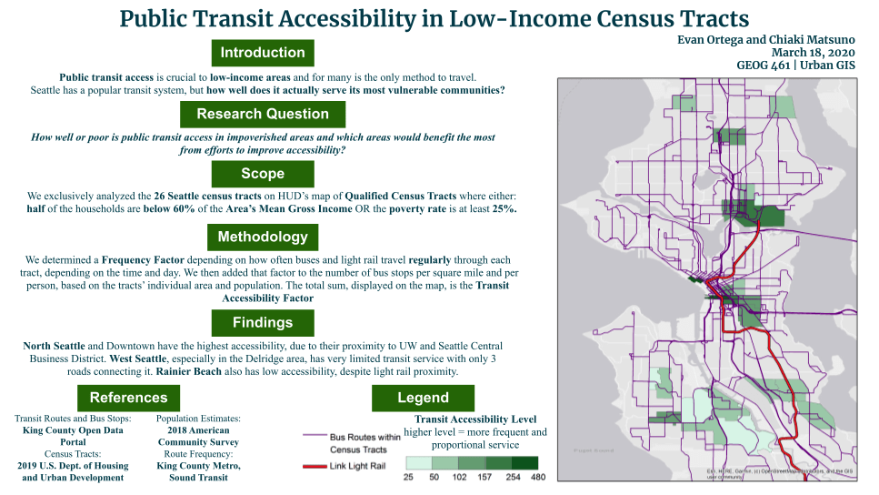

You can reach me at the following:
Transit Accessibility in Low-Income Neighborhoods

Final poster featuring transit accessibility map
For my Urban GIS class, I took on a project to assess public transit accessibility in low income Seattle neighborhoods. I focused on this topic because public transit is often the only means of travel for low-income individuals and it is crucial to their livelihood.
26 of Seattle’s HUD Qualified Census Tracts with a significant number of financially vulnerable populations were selected for this analysis. A Frequency Factor was first determined to indicate which areas regularly received bus and light rail services, and this value was added to the number of bus stops per square mile and per capita based on each tract’s area and population. The total sum was concluded to be the Transit Accessibility Factor.
The assessment found that North and Downtown Seattle had the highest accessibility due to its proximity to the Central Business District and UW Seattle. On the other hand, West Seattle had the most limited transit service due to lack of major roads leading to the center of the city and Rainier Beach also had low accessibility despite its proximity to a light rail station.
Return to see all projects